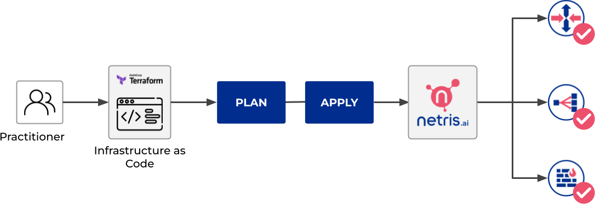

Terraform: Netris provider
Use Netris provider to interact with the many resources supported by Netris. You must configure the provider with the proper credentials before you can use it. To learn the basics of Terraform using this provider, follow the hands-on get started tutorials on HashiCorp’s Learn platform.
When you make changes in the Terraform files and apply them, Terraform automatically decides which part of your configuration is already deployed into Netris controller and what should be added or removed.
Install Terraform
Download and install the Terraform
Create a directory for Terraform files
Create a directory with any name, for example,
netris-terraform. It stores the configuration files and saved states for Terraform and your infrastructure.Create a configuration file with the
.tfextension in this directory, such asmain.tf.
Configure a provider
At the beginning of the configuration file, specify the provider settings.
terraform {
required_providers {
netris = {
source = "netrisai/netris"
version = "1.1.0"
}
}
}
provider "netris" {
address = "<controller address>"
login = "<controller login>"
password = "<controller password>"
}
Specify the provider required arguments:
address- This is your Netris-Controller address (http://example.com). This can also be specified with theNETRIS_ADDRESSenvironment variable.login- This is your Netris-Controller login. This can also be specified with theNETRIS_LOGINenvironment variable.password- This is your Netris-Controller password. This can also be specified with theNETRIS_PASSWORDenvironment variable.
Execute the command
terraform initin the folder with the configuration file. This command initializes the providers specified in the configuration files and lets you work with the provider resources and data sources.
Prepare an infrastructure plan
By using Netris Terraform Provider, you can create all kinds of resources, such as Sites, IPAMs, Topology, Inventory, etc. To create a resource, specify a set of required and optional parameters that define the resource properties. Such resource descriptions make up an infrastructure plan.
Infrastructure provisioning in Netris starts with Site resources. The Netris-Controller comes with the initial site Default. You can use it in your Terraform configuration files by getting its ID with the Terraform Data source element.
Let’s create a separate file for site resource, and get its ID via Terraform Data source element.
cat << EOF > site.tf
data "netris_site" "default" {
name = "Default"
}
EOF
Or, you can create a new Site resource, here is the detailed documentation with examples.
Now, when we’re clear on Site resource usage, let’s define our IPAM. There are two types of IPAM resources in the Netris-Controller it’s Allocation and Subnet.
IPAM resources only require tenantid field, let’s get our default Admin tenant ID with the Data source element.
cat << EOF > tenant.tf
data "netris_tenant" "admin"{
name = "Admin"
}
EOF
Then, when we have the tenantid, we can create IPAM resources.
cat << EOF > ipam.tf
resource "netris_allocation" "my-allocation-mgmt" {
name = "my-allocation-mgmt"
prefix = "192.0.2.0/24"
tenantid = data.netris_tenant.admin.id
}
resource "netris_allocation" "my-allocation-loopback" {
name = "my-allocation-loopback"
prefix = "198.51.100.0/24"
tenantid = data.netris_tenant.admin.id
}
resource "netris_allocation" "my-allocation-common" {
name = "my-allocation-common"
prefix = "203.0.113.0/24"
tenantid = data.netris_tenant.admin.id
}
resource "netris_subnet" "my-subnet-mgmt" {
name = "my-subnet-mgmt"
prefix = "192.0.2.0/24"
tenantid = data.netris_tenant.admin.id
purpose = "management"
defaultgateway = "192.0.2.254"
siteids = [data.netris_site.default.id]
depends_on = [
netris_allocation.my-allocation-mgmt,
]
}
resource "netris_subnet" "my-subnet-loopback" {
name = "my-subnet-loopback"
prefix = "198.51.100.0/24"
tenantid = data.netris_tenant.admin.id
purpose = "loopback"
siteids = [data.netris_site.default.id]
depends_on = [
netris_allocation.my-allocation-loopback,
]
}
resource "netris_subnet" "my-subnet-common" {
name = "my-subnet-common"
prefix = "203.0.113.0/25"
tenantid = data.netris_tenant.admin.id
purpose = "common"
siteids = [data.netris_site.default.id]
depends_on = [
netris_allocation.my-allocation-common,
]
}
EOF
With the command above, we’ve defined 6 resources, 3 of the type of Allocation, 3 of the type of Subnet, each Subnet resource has a different purpose. For more details, get familiar with the IPAM docs.
Now, when we have all the required resources let’s define our Inventory. We’re going to create 1 SoftGate, 1 switch and connect them with a link.
cat << EOF > inventory.tf
resource "netris_softgate" "my-softgate" {
name = "my-softgate"
tenantid = data.netris_tenant.admin.id
siteid = data.netris_site.default.id
description = "Softgate 1"
mainip = "auto"
mgmtip = "auto"
depends_on = [
netris_subnet.my-subnet-mgmt,
netris_subnet.my-subnet-loopback,
]
}
resource "netris_switch" "my-switch" {
name = "my-switch"
tenantid = data.netris_tenant.admin.id
siteid = data.netris_site.default.id
description = "Switch 01"
nos = "cumulus_linux"
asnumber = "auto"
mainip = "auto"
mgmtip = "auto"
portcount = 16
depends_on = [
netris_subnet.my-subnet-mgmt,
netris_subnet.my-subnet-loopback,
]
}
resource "netris_link" "sg-to-sw" {
ports = [
"swp1@my-softgate",
"swp16@my-switch"
]
depends_on = [
netris_softgate.my-softgate,
netris_switch.my-switch,
]
}
EOF
Next, let’s define a local L3 network for our servers, suppose we want to connect 3 servers to our switch first 3 ports
cat << EOF > vnet.tf
resource "netris_vnet" "my-vnet" {
name = "my-vnet"
tenantid = data.netris_tenant.admin.id
state = "active"
sites{
id = data.netris_site.default.id
gateways {
prefix = "203.0.113.1/25"
}
ports {
name = "swp1@my-switch"
vlanid = 1050
}
ports {
name = "swp2@my-switch"
vlanid = 1050
}
ports {
name = "swp3@my-switch"
}
}
depends_on = [
netris_switch.my-switch,
netris_subnet.my-subnet-common,
]
}
EOF
And finally, we have to provide internet connectivity to our fabric, for that we’ll define BGP resource. Suppose we’re going to connect our ISP cable to the 10th port of our switch, and want to establish the BGP session on our Softgate.
cat << EOF > bgp.tf
data "netris_port" "swp10_my_switch"{
name = "swp10@my-switch"
depends_on = [netris_switch.my-switch]
}
resource "netris_bgp" "my-bgp" {
name = "my-bgp"
siteid = data.netris_site.default.id
hardware = "my-softgate"
neighboras = 23456
portid = data.netris_port.swp10_my_switch.id
vlanid = 3000
localip = "172.16.0.2/30"
remoteip = "172.16.0.1/30"
description = "My First BGP"
prefixlistinbound = ["deny 127.0.0.0/8 le 32", "permit 0.0.0.0/0 le 24"]
prefixlistoutbound = ["permit 192.0.2.0/24", "permit 198.51.100.0/24 le 25", "permit 203.0.113.0/24 le 26"]
depends_on = [netris_link.sg-to-sw]
}
EOF
Note
For more information about all resources, how to create and manage them in Terraform, see the provider’s documentation.
Now, when we’ve done with the configuration files, let’s check whether they are valid
terraform validate
If the configuration is valid, the following message is returned:
Success! The configuration is valid.
Create resources
After preparing and checking the configuration, run the command:
terraform plan
The terminal will display a list of resources with parameters. This is a test step. No resources are created. If there are errors in the configuration, Terraform points them out.
To create resources, run the command:
terraform apply
Confirm the resource creation: type
yesin the terminal and press Enter.
Terraform will create all the required resources and the terminal will display the progress. After creation, you can check resource availability and their settings in the Netris-Controller UI.
Delete resources
To delete resources created using Terraform:
Run the command:
terraform destroy
After the command is executed, the terminal will display a list of resources to be deleted.
Type
yesto confirm their deletion and press Enter.